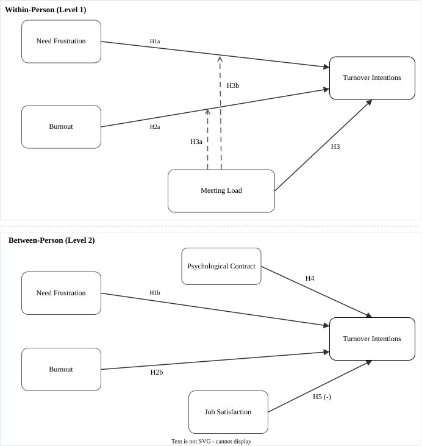

Background
The Study
Burnout and unmet needs don't just vary across employees; they fluctuate within the same employee across the workday. This study asks: do those within-day fluctuations predict when employees are most likely to think about quitting?

Conceptual model. Variables measured at three points per workday (L1, within-person) are shown above the dashed line; stable employee characteristics (L2, between-person) below. The outcome is turnover intentions at each measurement point.
Study design
Three-wave experience sampling (ESM) design: participants completed surveys at the beginning, middle, and end of their shift on each workday for approximately two weeks. Multilevel modeling (HLM) with random slopes partitions variance into within-person (L1) and between-person (L2) components. Primary outcome: turnover intentions assessed at every time point.
Who participated
The Sample
Loading participant data…
Recruitment funnel
Sample notes
Knowledge-worker convenience sample recruited via CloudResearch and departmental listservs. Inclusion criteria: full-time employment, primary use of a computer for work. Exclusions: incomplete ESM phase or failed data quality screens (n = 15).
Relationships between variables
Correlations
When employees feel more fatigued or frustrated at one time point, do they also think more about leaving? These correlations show how the study variables move together, both within a person across the day and between employees.
Within-person correlations (rmcorr): how each variable tends to move together within the same employee across time points. Values marked * are statistically significant (p < .05).
Methods
Within-person correlations use repeated-measures correlation (rmcorr; Bakdash & Marusich, 2017), which partitions between-person variance before estimating the within-person association. Between-person correlations are Pearson correlations of individual means. * p < .05.
How much variance is within vs. between employees
The Variance Story
Loading variance data…
Bars show the proportion of each variable's variance attributable to stable between-person differences vs. within-person fluctuation across the workday.
Intraclass correlation (ICC)
ICC = between-person variance / total variance. ICC = .792 for turnover intentions, estimated from the unconditional means model (M0). High ICC indicates stable trait-like differences; the remaining within-person variance (21%) is the portion the L1 predictors can explain.
Scale validity & common method bias
Measurement
Before testing the main hypotheses, we confirmed that each scale measured what it was designed to measure and that results were not inflated by same-source measurement artifacts.
Marker Variable Correlations
Each bar shows how strongly a study construct correlates with the marker variable (a scale chosen for high common method susceptibility but no theoretical link to the outcomes). Near-zero correlations indicate common method bias is not inflating results.
Fit index thresholds
Acceptable fit: CFI/TLI ≥ .90; RMSEA ≤ .08; SRMR ≤ .10. Both models exceed the CFI .90 threshold and fall within RMSEA bounds.
Marker model LRT comparison
Method-U adds marker cross-loadings; Method-R additionally constrains factor covariances. A non-significant LRT (p = 1.00 for Method-R vs. Method-U) confirms the baseline is unbiased. The marker variable used was ATCB (turnover cognitions measured with an alternative format), chosen for high common-method susceptibility with no unique theoretical role in the outcome.
Metric invariance across waves
Interactive
Model Explorer
The analysis built a series of models, each adding predictors to explain more variance. Select any model to see how well it fits and which predictors it includes.
Fixed effects
| Predictor | Estimate | SE | p | 95% CI |
|---|
Model sequence & shading
M0: unconditional means (ICC only). M1: fixed time trend. M2: random slope for time. M3: L1 within-person predictors. M4: L1 + between-person means. M5: L1 + L2 study variables (breach, violation, job satisfaction). M6: M5 + covariates (work hours, remote, shift). M7a/M7b: meeting-load interactions. Row shading: p < .05 (light red), p < .01 (medium), p < .001 (dark).
How large are the effects?
Effect Sizes
Standardized coefficients show the relative size of each predictor's effect, allowing comparison across variables on different scales. Points to the right of zero indicate positive associations with turnover thoughts.
Focal predictors only. Structural controls (intercept, time trend, between-person meeting load, recruitment source) are excluded from this plot; full fixed-effects tables including all terms are available on the Model Explorer tab.
Standardization & publication figure
Coefficients standardized using pooled SD. Error bars are 95% CIs. The publication forest plot below shows Model 5 effects with full variable labels.
Results summary
Hypothesis Scorecard
The study tested 17 directional hypotheses about how burnout, need frustration, and contract-related perceptions predict turnover thoughts.
Loading…
What it means
Takeaways
The findings reframe turnover intentions: withdrawal cognition is not only something employees have; it is something their workday does to them, hour by hour.
- PC Breach was supported at p = .050 (boundary significance). Effect is directionally consistent but should be replicated.
- Cognitive weariness (between-person) showed a negative coefficient, contrary to the predicted direction. CW and EE are highly correlated at L2; suppression likely inflates the CW estimate.
- Meeting load moderation (H3a, H3b) was not supported. Meeting count and time did not amplify within-person effects, possibly due to floor effects (knowledge workers with moderate meeting loads).
Study limitations
Power simulations indicated approximately 42% power for the smallest targeted within-person effect sizes (f2 ~ .02). The sample skews toward knowledge workers, limiting generalizability to manual or service-sector roles. Three daily measurement occasions may not capture faster within-day dynamics. Cross-sectional between-person associations cannot establish causality.
Scope & Constraints
Limitations
Seven constraints qualify these findings. They do not invalidate the conclusions but specify where replication, densification, and broader sampling are needed before generalizing further.
The principled alternative is multilevel ordinal regression via cumulative link mixed models (CLMM). Rather than estimating unit differences in a continuous score, CLMMs model the probability of exceeding each response threshold (1 to 2, 2 to 3, etc.) without requiring equal spacing between categories. They respect the bounded 1-to-5 range, handle floor and ceiling compression without violating residual normality, and produce threshold parameters that are more directly interpretable for ordered categorical outcomes.
The overall pattern of findings reported here is likely robust to this distinction; linear and ordinal approaches tend to agree on direction and significance when effects are not extreme and the scale has five or more categories. However, the specific coefficient magnitudes and their standard errors are best interpreted as approximations. A CLMM reanalysis is the most targeted methodological extension for this line of work.
Future Directions
These constraints define the natural next steps.